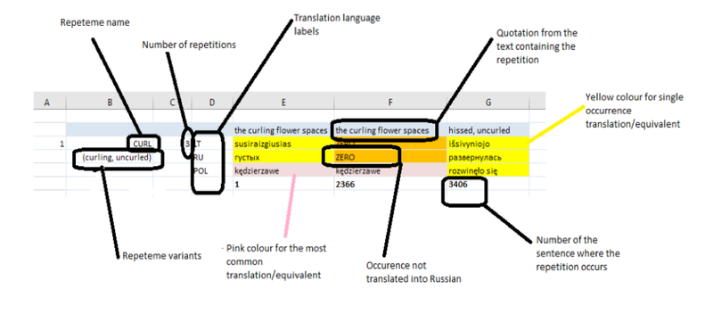

Dataset
Repeteme Visuals Bibliography Team
The DRaL Dataset consists of a large sample of repetition strings collected from each chapter of The Sound and the Fury (for the definition of repetition string, see Repeteme). Data were initially collected in spreadsheets and modelled as non-contiguous repetition strings (see the IP's thesis). KDL mapped the original data to an ad hoc data model for the project, imported and stored it in a PostgreSQL database. During the phases of data migration and modelling, data was curated by Research Assistant. The data model and digital solutions created by KDL enabled iterative data cleaning and verification stages via the tabular visualisations. While the data model was mapped to the thesis dataset original structure, KDL solution optimised it and made it reusable for the potential repeteme analysis of other texts, provided the same input format is used.
The original text served to construct repetition strings, which have been continuously revised before and during DRaL. Strings were arranged in blocks to represent a repeteme (see Repeteme). In spreadsheets, the English strings were arranged in rows by descending frequencies and in alphabetical order. The corresponding choices of the translators were aligned one by one with the instances of the English strings. The last row below translatorial strings in a repeteme entry contains the numbers of sentences in which English repetitions were found. Figure below illustrates the structure of a repeteme entry as created in the original database in spreadsheets:
Instances that were omitted or heavily rephrased in translation were marked as 'ZERO'. Colour coding was also used to model and compute the original dataset to extract the counts of, for example, omissions or different variants per string. Except for colour coding, the same principle of structuring and formatting the dataset has been used to create its Tabular visualisation (see Visualisations).
Currently, only data from two of the four chapters of the novel are available to the public to explore. These are the first and fourth chapters narrated by Benjy and Dilsey, and hence labelled as 'Benjy' and 'Dilsey' in Settings. Both datasets consist of repetitions gathered from the original text to construct repetition strings each instance of which is aligned with the choices that the translators made. The sources used to build the original datasets include the only existing Lithuanian, one Polish, and one Russian translations. In addition, the data from a second Russian translation and the first French translation have recently become available in the Benjy dataset of DRaL. For more information on the editions used in this project, see Bibliography.
On the application of the concept of repeteme in the treatment of the project's data, please see Repeteme.
Technical notes
To experiment with data visualisations, King’s Digital Lab developed a web application where textual data can be uploaded dynamically by project partners and visualised to observe and reflect upon the patterns of how repetitions are rendered in translation.
The web application is implemented and published using well established open source software and widely used web standards, such as the Django web framework together with the Wagtail content management system package.
The data is exposed as a JSON Web API. To create the visualisations, the data is rendered into the dynamic featured and exploratory SVG graphs or plots using D3.js libraries.
Despite the project being experimental, the data model and the Web API make the DRaL system extensible to enable, for example, the creation of new visualisations.
The code for the project is available under MIT license on the KDL Github repository.